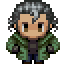

Meet the Squad: Rondo of Wizardry and Love
About Rondo of Wizardry and Love
Rondo of Wizardry and Love is a tactics RPG set in America in the year 2027. The game is based on the "legend" that people gain wizard powers by staying celibate until they are thirty years old. As you may already tell, the game is comedic in nature.
The story follows a thirty year old businessman named Luciano who comes home to find a strange portal and his "wife" Homura missing. When he steps through the portal, he emerges into a new world, and his wizard powers are awakened. He and his friends then set out on a journey to rescue Homura.
In this blog post, we will see the crew that Luciano musters to help him in his journey to rescue his wife.
Meet the Squad
The Wizard
Name: Luciano
Age: 30
A wealthy businessman who is married to an anime character. Had delusions of having a hidden power, but "sealed" it away to blend in to society.
The Edgelord
Name: Zed
Age: 30
Edgy, cynical, nihilistic. Hones his skills with the blade every day. Claims to know kung-fu due to his heritage.
The Swoldier
Name: Mark
Age: 29
Pragmatic and logical. Fitness fanatic who meticulously keeps track of numbers and statistics. Actually used to be very scrawny.
 The Prepper
Name: Calvin
Age: 28
Conspiracy theorist who believes anything. His distrust in the government led him to stock a fallout shelter. Seemingly impossible to contact.
New Squad Members
These characters join the squad through the course of the game. I won't reveal all of their information here. You'll have to play the game to find out!
The Pastafarian
Name: ???
Age: 30
Atheist turned Pastafarian who takes his "faith" a little too seriously. Often seen playing TCGs with high-schoolers at the comics shop.
The White Knight
Name: ???
Age: 31
Old-fashioned and into historical things. Would probably fit in if transported back to the Middle Ages.
The Otherkin
Name: ???
Age: 27
Believes she is a wolf in a human body. Somehow is always carrying food and snacks.
The Meido
Name: ???
Age: 26
Works in a maid cafe. Has a strange obsession with knives thanks to an online game.
If you enjoyed reading this post, feel free to follow us on Twitter to get updates on our games and blog posts!